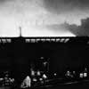

Bio
Artist Craig McPherson is known for his New York murals, as well as paintings, mezzotint engravings, pastels and drawings on a variety of subjects, reflecting a 30-year tenure in New York City and a 50-year professional art career.
 McPherson's work has been exhibited in one-man gallery shows in New York, where he is represented by Forum Gallery, and in group shows all over the world. His body of work also includes a number of corporate and museum commissions. In 1998 he had his first museum retrospective at The Fitzwilliam Museum in Cambridge, England. The show traveled to The Hunterian Museum in Glasgow, Scotland. In 2008 McPherson was commissioned by the Frick Museum to create an exhibition reflecting the heritage of steel production in Pittsburgh as part of that city's 250th anniversary celebration. His most recent show at Forum Gallery "Steel/Stage" focused on images from heavy industry, experimental theater and theater interiors.
McPherson's work has been exhibited in one-man gallery shows in New York, where he is represented by Forum Gallery, and in group shows all over the world. His body of work also includes a number of corporate and museum commissions. In 1998 he had his first museum retrospective at The Fitzwilliam Museum in Cambridge, England. The show traveled to The Hunterian Museum in Glasgow, Scotland. In 2008 McPherson was commissioned by the Frick Museum to create an exhibition reflecting the heritage of steel production in Pittsburgh as part of that city's 250th anniversary celebration. His most recent show at Forum Gallery "Steel/Stage" focused on images from heavy industry, experimental theater and theater interiors.
During the late 70's and early 80's McPherson concentrated on New York City landscapes, primarily at night, creating a series of paintings and prints in the rare graphic medium of mezzotint. This includes the iconic image, "Yankee Stadium at Night." His work has been described as "cinematic," the night scenes likened to film noir. One curator, describing work from this period, wrote "McPherson is almost literally 'sculpting with light'." In 1983, McPherson had his first one-man exhibition at the A.M. Sachs Gallery on 57th Street in New York, where The New York Times critic Grace Glueck likened his paintings to those of the 17th Century Dutch master, Koninck.
From 1985 to 1992 McPherson spent seven years on commissioned paintings, including one of the largest mural cycles ever undertaken in New York City. The murals were commissioned by the American Express Company for their corporate headquarters at the World Financial Center, Brookfield Place, in lower Manhattan. These included a 90-foot mural cycle for the auditorium (1985-86), followed by a 318-foot cycle for the main lobby (1987-92). The first mural cycle is composed of four paintings titled, "Twilight: The Waterways and Bridges of Manhattan." The second project, titled "Harbors of the World," is comprised of ten paintings 11-feet high and 318 feet in length, six of the paintings are 42-50 feet long. The project involved working on site in New York, Venice, Istanbul, Hong Kong, Sydney and Rio de Janeiro for the first 14 months, followed by four years of studio work in New York. The Harbors murals are on permanent view in the American Express Company lobby at 200 Vesey Street. These paintings comprise one of the largest mural cycles in the U.S.
") Since the mid-90's, McPherson has been working with a broad range of imagery including landscape, natural phenomenon, near abstraction and the human figure. He has combined metaphoric elements and performers from experimental theatre. The New York Times critic Ken Johnson called his 2001 show featuring a 60-foot pastel of water, "a spectacular tour de force." He wrote, "It verges on abstraction, yet produces an enveloping cinematically lush effect."
Since the mid-90's, McPherson has been working with a broad range of imagery including landscape, natural phenomenon, near abstraction and the human figure. He has combined metaphoric elements and performers from experimental theatre. The New York Times critic Ken Johnson called his 2001 show featuring a 60-foot pastel of water, "a spectacular tour de force." He wrote, "It verges on abstraction, yet produces an enveloping cinematically lush effect."
 Craig McPherson's work is included in numerous museum, corporate and private collections in the U.S. and abroad. These include The Metropolitan Museum of Art and Whitney Museum, New York; The British Museum, London; The National Gallery of Art, Washington, D.C.; The Art Institute of Chicago; Art Gallery of New South Wales, Sydney; Boston Museum of Fine Arts; Boston Public Library; The Carnegie Institute of Art, Pittsburgh; The Cleveland Museum; Delaware Art Museum; The Detroit Fine Arts Institute; The Fitzwilliam Museum, Cambridge, England; The Fogg Museum at Harvard; The Hunterian Museum, Glasgow; The Library of Congress; Minneapolis Institute of Art; National Museum of American Art and The Smithsonian Institution, in Washington, D.C.; The New York Historical Society; Museum of the City of New York; The McNay Art Museum; San Francisco Museum of Fine Art; Wichita Art Museum and many other city and university collections. Corporate collections include Alliance Bernstein, American Express, Bank of America, Citicorp, Dreyfus, ExxonMobil, General Electric, JP Morgan Chase, Marsh McLennan, MBIA, Microsoft, Wrigley's Inc. and others.
Craig McPherson's work is included in numerous museum, corporate and private collections in the U.S. and abroad. These include The Metropolitan Museum of Art and Whitney Museum, New York; The British Museum, London; The National Gallery of Art, Washington, D.C.; The Art Institute of Chicago; Art Gallery of New South Wales, Sydney; Boston Museum of Fine Arts; Boston Public Library; The Carnegie Institute of Art, Pittsburgh; The Cleveland Museum; Delaware Art Museum; The Detroit Fine Arts Institute; The Fitzwilliam Museum, Cambridge, England; The Fogg Museum at Harvard; The Hunterian Museum, Glasgow; The Library of Congress; Minneapolis Institute of Art; National Museum of American Art and The Smithsonian Institution, in Washington, D.C.; The New York Historical Society; Museum of the City of New York; The McNay Art Museum; San Francisco Museum of Fine Art; Wichita Art Museum and many other city and university collections. Corporate collections include Alliance Bernstein, American Express, Bank of America, Citicorp, Dreyfus, ExxonMobil, General Electric, JP Morgan Chase, Marsh McLennan, MBIA, Microsoft, Wrigley's Inc. and others.
McPherson has won a number of art awards and honors from the American Academy and Institute of Arts and Letters, National Endowment for the Arts (NEA), National Academy of Design, Classical America and other art organizations, as well as grants and fellowships from The Pittsburgh Foundation, Frick Art Museum, Airlie Foundation, MacDowell Colony and others. He has been reviewed in The New York Times, The Financial Times, Art in America, Artforum, Artnews, The New York Post, The New York Observer and other publications, and interviewed on NPR.
Craig McPherson was born in Wichita, Kansas in 1948. After receiving a Bachelor of Fine Arts at the University of Kansas in 1970, he spent the following years curating and lecturing for the NEA and Wichita Art Museum in Kansas. He was the director of the Michigan Artrain, a museum train sponsored by the Detroit Institute of Art and NEA that toured the Rocky Mountain States, before taking up residence in New York in 1975 to develop his career as an artist.